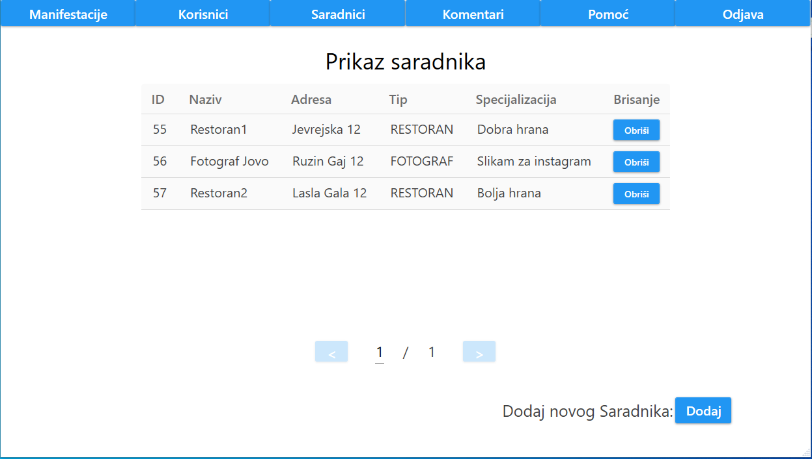
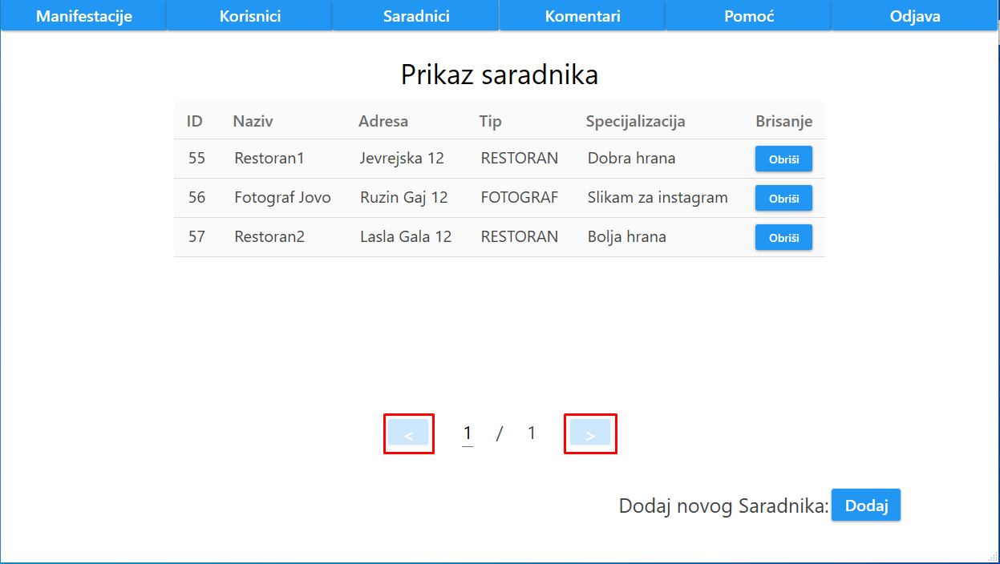
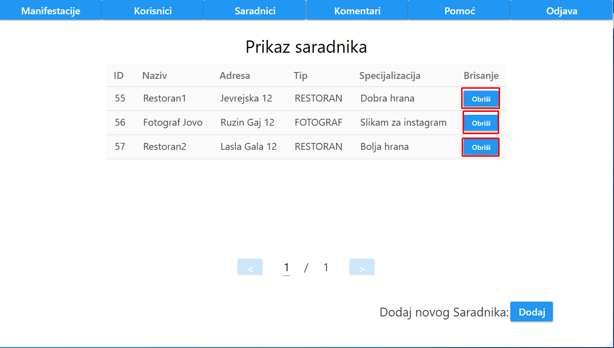
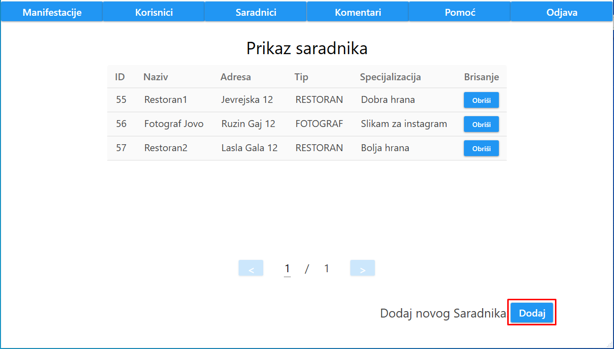

Nakon klika na dugme "Saradnici", korisniku se prikazuje lista svih saradnika.
Prikaz saradnika je odrađen tabelarno, gde je za svakog saradnika ispisan njegov ID , adresa, tip i specijalizacija.
Takođe, urađena je paginacija saradnika tako da se na jednoj stranici nalazi najviše 5 saradnika.
Ukoliko admin želi da pređe na narednu ili prethodnu stranicu, to mu je omogućeno klikom na dugme ">", odnosno "<".
Ukoliko admin želi da obriše nekog saradnika, to mu je omogućeno klikom na dugme "Obriši" pored željenog saradnika.
Admin može da doda novog saradnika, klikom na dugme "Dodaj" koje se nalazi u donjem desnom uglu.
DETALJNIJE OVDE